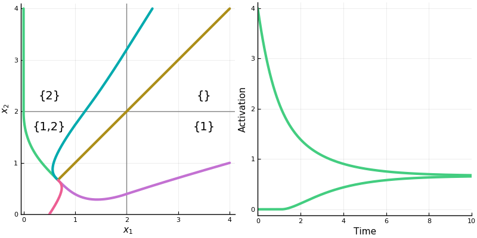

Table of Contents
A Model of Associative Memory
How memories are encoded in neural matter is still an open question. The name for these supposed neural correlates of memory is “engram”, and papers about engrams tend to have titles like Finding the engram, Catching the engram, In search of the engram, Continuing the search for the engram, which, though I’m not an expert, makes me feel like the problem isn’t well understood.
(Also, Rite of passage of the engram and Manipulating a cocaine engram, making the practice of neuroscience sometimes sound like a fraternity hazing. Possibly related, while researching this post I learned that a typical experiment will usually involve things like shocking the feet of a fruit fly, sewing shut one eye of a barn owl, and shaving half the whiskers off a mouse.)
A popular theory is that memories are encoded as patterns of synaptic connections. Perception creates neural activity. Neural activity leaves an impression upon the brain as a pattern of modified synaptic connections (perhaps by dendritic spines, which become larger and more numerous to make the connection stronger). A later perception might partly activate this pattern, but this partial activation is often enough to activate the rest of the pattern, too. This is supposed to be a neural model of associative memory. (The tradition is to cite Proust at this point; evidently, a sponge cake was sufficient to activate in him the neural substrate of a 1,267,069 word novel. It’s remarkably illustrative, at least.)
Artificial neural networks are often used to model the networks of the brain. Feedforward networks have typically been used to model the visual system, while recurrent networks have more often been used to model memory. When an input is applied to certain of these recurrent networks, the neural activity will always converge to a stable steady state. This stable pattern of activity is supposed to be a memory, stored within the connections of the network.
Some of the most studied networks are those that are symmetrically connected, like the Hopfield network. A network is symmetrically connected if every neuron is connected with the same weight as whatever is connected to it. A symmetrically connected network with a linear activation function can, for a given set of connection weights, be activated only to a single stable steady state (whose values depend upon the input to the network). The drawback of these networks then is that the activity at future states will be independent of the activity at past states. Past recall cannot influence future recall.
Hahnloser and Seung present a model of associative memory in symmetrically connected networks using instead a threshold-linear activation function (or rectified linear function).
They show that, due to some nice properties of the rectifier, such networks can in general represent multiple patterns of stable activation even for a single input. What pattern the network will fall into upon new input, depends upon what pattern it was in before. Memories linger.
Their main contribution in this paper is in classifying neurons into what they call “permitted” and “forbidden” sets, which describe what sets of neurons may be activated together in a stable steady-state. They describe a method of determining what patterns of stable activity the network can achieve.
The existence of permitted and forbidden sets suggests a new way of thinking about memory in neural networks. When an input is applied, the network must select a set of active neurons, and this selection is constrained to be one of the permitted sets. Therefore the permitted sets can be regarded as memories stored in the synaptic connections.
Symmetric Threshold-Linear Networks (a.k.a. Symmetric Rectifier Networks)
A threshold-linear network has the form \[ \dot{x} = -x + \bigg[W x + b \bigg]_+ \tag 1 \label 1 \] where \(x\) is a vector with \(n\) components representing neural activation, \(W\) an \(n \times n\) matrix representing the connection weights between neurons, \(b\) is a vector representing (constant) external input, and \([\cdot]_+ = \operatorname{max}\{0, \cdot\}\), the rectifier function. Hahnloser and Seung assume the weight matrix \(W\) is symmetric (meaning, neurons are connected symmetrically).
For a single neuron we can write \[ \dot{x}_i = -x_i + \bigg[\sum_{j=1}^n w_{ij} x_j + b_i\bigg]_+ \tag 2 \label 2 \] Whenever \(\sum_{j=1}^n w_{ij} x_j + b_i \leq 0\) the input to the neuron is 0. Its dynamics become \(\dot x_i = -x_i\) and its activation will decay exponentially to 0; it is “off”. What this means is that generally only a subset of neurons will be active at any time, and which neurons are active may change as the system evolves.
It helps to think about neurons as being active within “chambers” of the activation space. (These chambers can be found by considering when the expression inside \([\cdot]_+\) is equal to 0.) In each chamber, some of the neurons will be active and some will be inactive. Within each chamber, the network will evolve according to that chamber’s linear equations: \[ \dot{x} = -x + W_\sigma x + b_\sigma \tag 3 \label 3 \] (Here, \(\sigma\) means the set of neurons that are currently active, and \(W_\sigma\) and \(b_\sigma\) have entries set to 0 for those neurons not in \(\sigma\).) Whenever the system enters a new chamber, some neurons will switch on and some will switch off, and a new set of linear equations takes over. Each chamber has a set of eigenvectors given by \(W_\sigma\). These eigenvectors show straight line flows within that chamber.
Let’s take a look at the dynamics of a two neuron system with weight matrix \(\begin{bmatrix}0 & -\frac12 \\ -\frac12 & 0\end{bmatrix}\).
First, the rectified version. The activation space is divided into four chambers; the labels indicate which neurons are active in that chamber. Each curve represents different initialization values for the neurons; the input vector \(b\) is always the same. On the right is a plot for one initialization. In this example, the network always converges to a single steady state, though in other networks there may be more than one.
Notice how the dynamics change when the system enters in innermost chamber \(\{1,2\}\). Compare this to the same system lacking the rectifier \([\cdot]_+\); it is a linear system.

Three Theorems
The authors prove three theorems. The first gives the conditions under which a network will have a set of global, stable steady states (aka. globally asypmtotic fixed points, equilibrium points), depending on connection weights and input. These steady states, when they exist, are fixed points of activation to which the network will always converge.
Assuming these conditions, in the second and third theorems the authors give two possibilities for this set of steady states. The first possibility is that the network contains forbidden sets of neurons, neurons that may not be activated together at a steady state; in this case the network will be multistable: for a given input, it may converge to one of several steady states depending on initial activations. The second possibility is that there are no forbidden sets; in this case, for a given input, the network will always converge to the same steady state; as far as stable points go, it is just like a linear system, without the rectifier.
Theorem 1 - Steady States
Again, this theorem gives the conditions under which a network may have a set of stable steady states.
The authors present their results in terms of the matrix \(I-W\). We can rewrite the linear system \(\ref 3\) as \[ \dot x = (-I + W)x + b \tag 4 \] The stability of the system can be determined from the eigenvalues of the matrix \(-I + W\); specifically, the system is globally asymptotically stable if the real parts of the matrix are all negative. Since \(-I + W\) is symmetric and real, its eigenvalues will all be real; so, we are looking for negative eigenvalues. It is, however, usually more convenient to work with positive numbers, so instead we can look for positive eigenvalues of \(I - W\) (or even eigenvalues of \(W\) that are less than 1).
Theorem 1
If W is symmetric, then the following conditions are equivalent:
- All nonnegative eigenvectors of all principal submatrices of \(I - W\) have positive eigenvalues.
- The matrix \(I - W\) is copositive. That is, \(x^\top (I - W)x \gt 0\) for all nonnegative \(x\), except \(x = 0\).
- For all \(b\), the network has a nonempty set of steady states that are globally asymptotically stable.

One of the things I liked about this paper was that they proved their results using methods from both Lyanpunov functions and quadratic programming. They prove that \((1)\) implies \((2)\), for instance, by minimizing \(v^\top (I - W) v\) (a quadratic function) for nonnegative vectors \(v\) on the unit sphere (that is, \(\left\lVert v \right\rVert = 1\)). The quantity \(R(v) = v^\top (I - W) v\) is equivalent to the Rayleigh quotient. Optimizing \(R\) will find the eigenvectors of the matrix \(I - W\). Because of the rectifier, neural activations (provided they start above 0) can never fall below 0. Any steady state therefore will occur along a non-negative eigenvector. This, I think, is one of the most important insights about the effect of the rectification.
Here are the authors again:
The meaning of these stability conditions is best appreciated by comparing with the analogous conditions for the purely linear network obtained by dropping the rectification from (1). In a linear network, all eigenvalues of W would have to be smaller than unity to ensure asymptotic stability. Here only nonnegative eigenvectors are able to grow without bound, due to the rectification, so that only their eigenvalues must be less than unity. All principal submatrices of W must be considered because different sets of feedback connections are active, depending on the set of neurons that are above threshold. In a linear network, \(I - W\) would have to be positive definite to ensure asymptotic stability, but because of the rectification, here this condition is replaced by the weaker condition of copositivity.
So, the tradeoff for the rectification is that we get stability for more general sets of weight matricies, but we have to analyze all \(2^n\) principal submatrices to find out if we get it.
Theorems 2 and 3 - Permitted and Forbidden Sets
These two theorems classify the permitted and forbidden sets of a network.
The first theorem tells us that if a network has a set of global, stable steady states, then all of the nonnegative eigenvectors of all principal submatrices of \(I-W\) will have positive eigenvalues. When the system begins with positive activations, the activation will flow along time-varying superpositions of the (nonnegative) eigenvectors toward some fixed point. We might think that every subsystem has to have a fixed point, then. But this is not so. It could turn out that what would be the fixed point for the subsystem lies outside of its chamber, and then the dynamics will have changed before the system ever reaches it. In this case the system has a forbidden set, because the neurons in that subsystem cannot be coactivated together at a stable steady state.
Theorem 2
If the matrix \(I - W\) is copositive, then the following statements are equivalent:
- The matrix \(I - W\) is not positive definite.
- There exists a forbidden set.
- The network is conditionally multistable. That is, there exists an input \(b\) such that there is more than one stable steady state.
They prove that (2) implies (3) by examining a Lyapunov function \(V(x) = \frac12 x^\top (I - W) x - b^\top x\). They argue as follows: a forbidden set implies the existence of a negative eigenvalue of \(I - W\) in the corresponding active submatrix. The function \(V\) therefore forms a saddle. The system can be initially activated on either side of the saddle, and will descend to a different minimum on each side. These are two different stable steady states.
Theorem 3 If \(W\) is symmetric, then the following conditions are equivalent:
- The matrix \(I - W\) is positive definite.
- All sets are permitted.
- For all \(b\) there is a unique steady state, and it is stable.
A linear system, like \(\ref 3\), will have a global steady state if \(I-W\) is positive definite (all eigenvalues are positive). So, in a rectified system if all the neurons may be activated together at a stable steady state, the system behaves much like a linear system in regard to its steady states. Rectified systems are more interesting when they have some forbidden sets.
If I am understanding the paper correctly, we could characterize permitted and forbidden sets like this:
| permitted set | forbidden set |
| principal submatrix with only positive eigenvalues | principal submatrix with a negative eigenvalue |
| neurons that can be coactivated at a stable steady state | neurons that cannot be coactivated at a stable steady state |
| positive eigenvectors and positive eigenvalues | eigenvectors with negative components that give negative eigenvalues |
Finally, they show with the interlacing theorem that the sets of neurons that may be coactivated together at stable states are constant in some sense throughout the system, for the reason that eigenvalues of a submatrix have to be contained in the radius of eigenvalues of the parent matrix.
Theorem 4
Any subset of a permitted set is permitted. Any superset of a forbidden set is forbidden.
Here for instance are the permitted sets for a network of ten neurons with randomly generated weights.

(This only shows “maximal” permitted sets; that is, those permitted sets not contained in any other permitted set.)
And this shows the steady state of the topmost permitted set with each neuron receiving an input of 1.
And here is a (different) network transitioning through stable states as inputs and activations vary.
Conclusion
If a connection pattern in a network is a memory, then multistability allows the brain to store memories much more efficiently. Patterns of activation can overlap within a network. One neuron can partake of several memories, much like a single gene can be implicated in the expression of a multitude of traits or behaviors. I imagine that whatever process the brain uses for memory storage, it must make a tradeoff between robustness and efficiency. It wants to minimize the cost of storing memories and so should use as few neurons as possible to do so, yet the death of a single neuron shouldn’t disrupt the system as a whole. The model of overlapping patterns seems to me like a plausible solution.
(I decided to read this paper after becoming interested in Carina Curto’s work on combinatorial threshold networks. She and her collaborators have extended the ideas presented here to more general threshold networks that can display various kind of dynamic behavior. I hope I can review some of her work in the future.)
Appendix - Computing Permitted Sets in Julia
using Combinatorics
using LinearAlgebra
"""Determine whether the list `l1` is a numerical translation of the
list `l2`. The function will return `true` when `l1 == k+.l2` for some `k`
modulo `n+1`."""
function istranslation(l1, l2, n::Int)
any([l1 == map(x -> mod(x+i, n+1), l2) for i in 1:n])
end
"""Returns a maximal set of lists from `lists` that are unique up to translation."""
function removetranslations(lists, n::Int)
ls = []
for l in lists
if !any(map(x->istranslation(l, x, n), ls))
push!(ls, l)
end
end
return ls
end
"""Returns a set of lists from `lists` that are not properly contained in
any other list."""
function removesubsets(lists)
isproper(a, b) = issubset(a, b) && a != b
ls = []
for a in lists
if !any(map(b -> isproper(a, b), lists))
push!(ls, a)
end
end
return ls
end
"""Determines whether a matrix `A` represents a permitted set of neurons. `A`
should be of the form `I-W`, where `W` is the weight matrix."""
function ispermitted(A)
all(map(x -> x>0, eigvals(A)))
end
"""Returns a matrix `P` of all permitted sets represented by a matrix
`A` of the form `I-W`. If neuron `j` is contained in permitted set
`i`, then `P[i,j] == 1`; otherwise, `P[i,j] == 0`. Each permitted set
is unique up to translation, and is not contained in any other
permitted set in `P`."""
function permittedparents(A)
ps = []
n = length(A[:,1])
idxs = removetranslations(powerset(1:n), n)
filter!(!isempty, idxs)
for idx in idxs
submatrix = A[idx, idx]
if ispermitted(submatrix)
push!(ps, idx)
end
end
ps = removesubsets(ps)
P = zeros(length(ps), n)
for (i, pp) in enumerate(ps)
for j in pp
P[i, j] = 1
end
end
return P
end